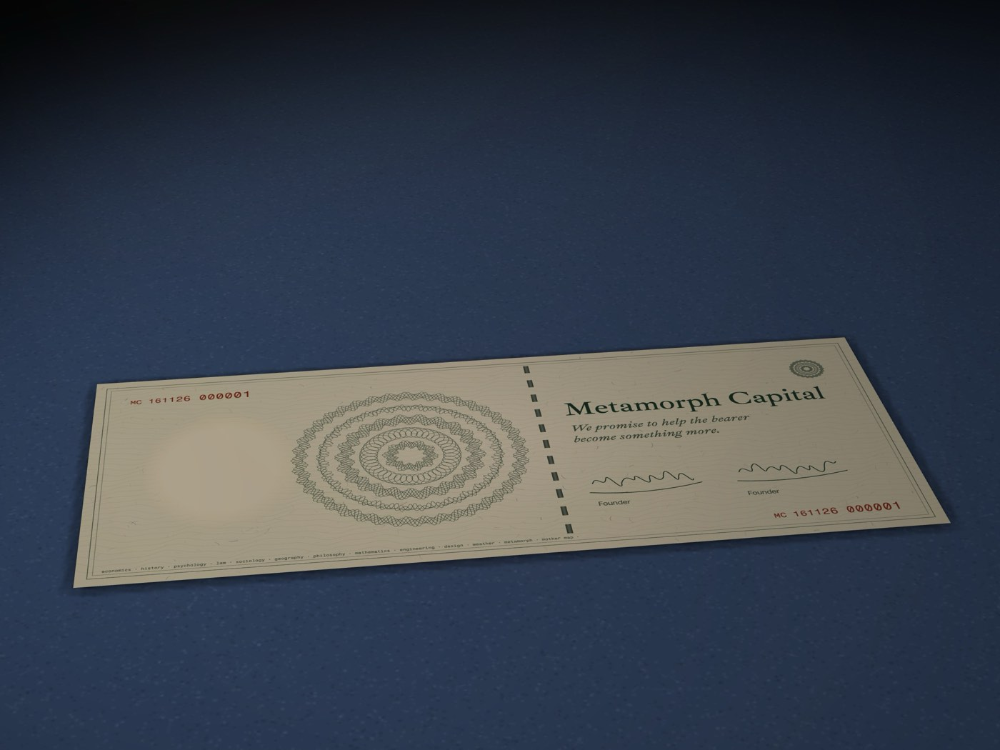
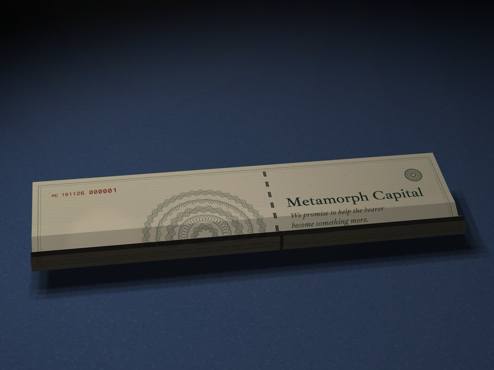
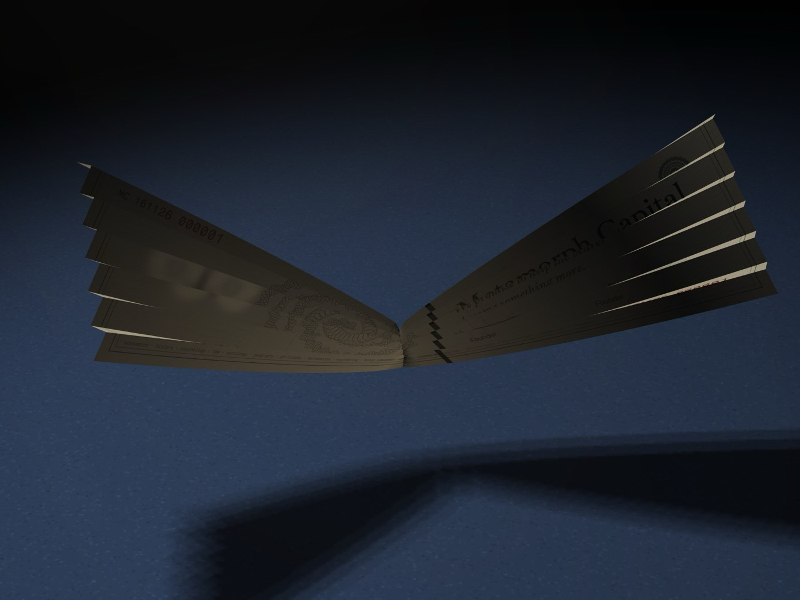
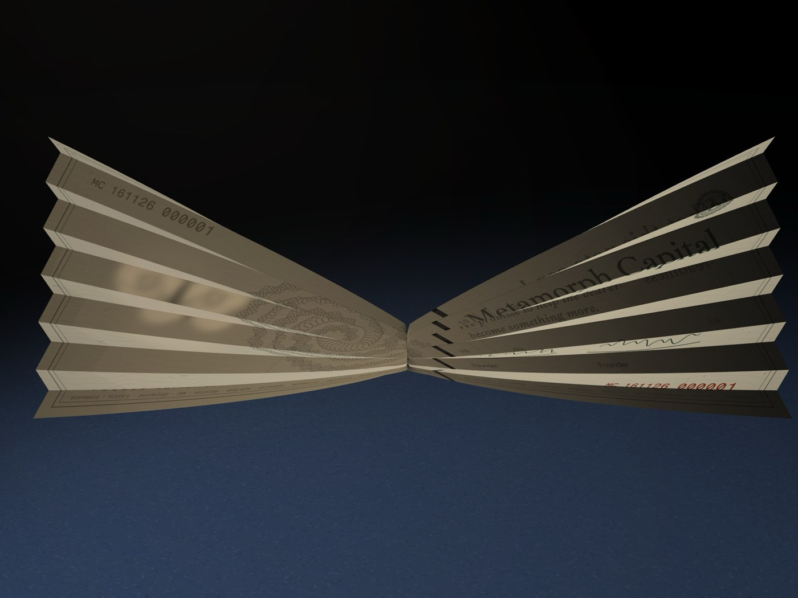
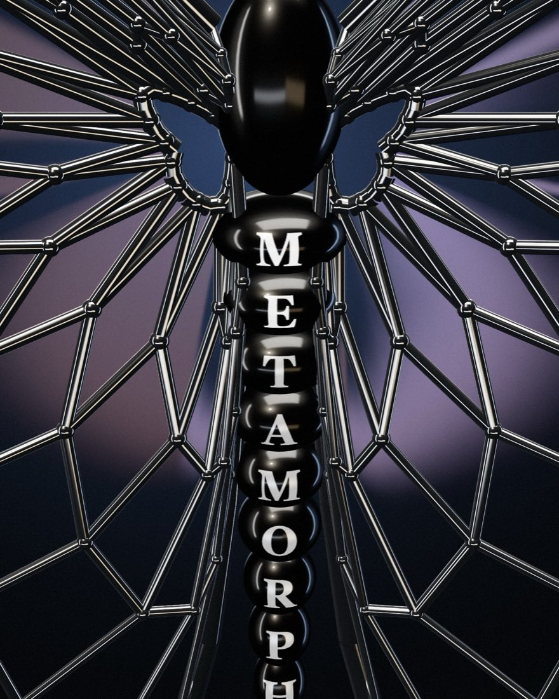

Backed by a 30-year chartered accountancy practice.
Film to come: the evolution of people
met·a·morph/ˈmet.ə.mɔːf/noun
1A living thing that has gone through a complete change. 2 We work with companies in the middle of theirs.
30
Years of signed accounts in the chartered accountancy practice behind us.
04
Ways we work with founders, from the first cheque to the next generation.
27
Disciplines on the founder's grid, each read for how it moves a business.
48
Sectors read against them, with 151 places where one decides another.
Four ways we work with founders.
From readiness to the raise, through the decisions inside, the numbers that keep up, and the wealth that has to last.




01The note, flat
01
Fundraising and investor readiness
We raise capital, and make you ready for it first: a model that holds up under questions, a data room with nothing missing, a story spun thread by thread.
Investment narrative · pitch deck · financial model · data room
02
Strategic consulting
We sharpen strategy for founders growing faster than their plans: the few decisions made inside, before the change shows.
Product-market fit · capital and runway · team · governance
03
Financial services
We keep the numbers honest while everything changes: accounts, tax, compliance, and a structure that still makes sense at ten times the size.
MIS · unit economics · cash flow · working capital
04
Wealth management
We help wealth last, through a multi-family office for founders and their families, planned for the generation after this one.
Complete private portfolio management for family offices

We take it on only when every condition is met.
If we can add what no one else brings,1if it pulls at us, like a calling,2with a greed-less conscience,3after reading the business, not the deck,4for the generation after this one.5
1The first of the founders' two questions, asked before anything begins.
2The second. Without both, we say no.
3Saying no when the fee is the only reason to say yes.
4An in-depth evaluation: the books before the pitch.
5It is far easier to make wealth than to keep it.
The people
Everyone here has changed form at least once.
Each of us is struck on a coin. Turn one over to see who we were before.
Press and hold to light the room: threads from the disciplines each person brings run down to their coin. With a keyboard, press Enter.
Advisory board
Twenty-seven ways of knowing against forty-eight ways of earning.
The founder's grid: every sector we read, and the disciplines that decide how each one behaves.


 that has gone through a complete change.
that has gone through a complete change. We work with companies in the middle of theirs.
We work with companies in the middle of theirs.